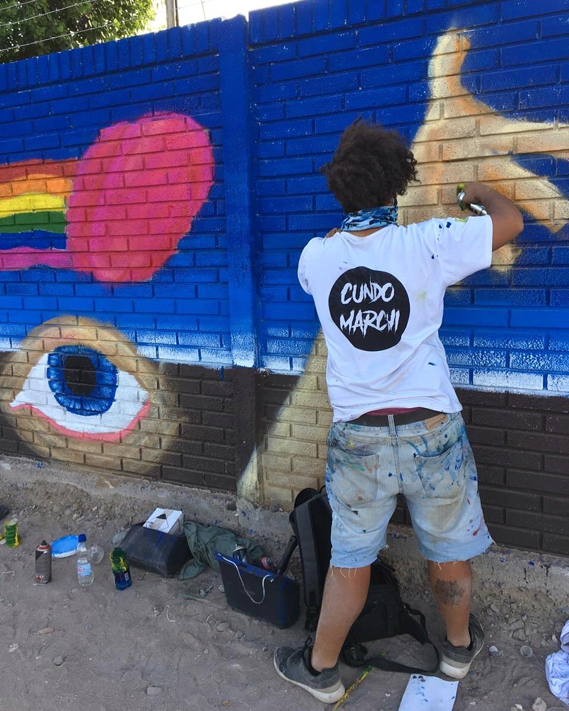

The Fusion of Life
Mural EventMix Media

Represents the fusion of heart and brain, love and reason working toward one purpose. 50% love, 50% reason, 100% dedication.

Represents the fusion of heart and brain, love and reason working toward one purpose. 50% love, 50% reason, 100% dedication.
